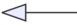
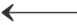
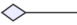
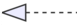
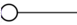

|
|
0.5.4
C++ to UML diagram generator based on Clang
|
Loading...
Searching...
No Matches
|
|
0.5.4
C++ to UML diagram generator based on Clang
|
The minimal config required to generate a class diagram is presented below:
The basic class diagram generated by clang-uml and rendered using PlantUML looks like this:
Member types and method return types are rendered at the end after : sign.
Static methods and members are underlined.
In case method argument lists are too long and not required for diagram readability, they can be suppressed completely or abbreviated by setting generate_method_arguments option to either none, abbreviated or full (default).
In order to only include public members in the class diagrams, we can add the following inclusion filters:
To render only classes without any properties an exclusion filter can be added:
The following table presents the PlantUML and MermaidJS arrows representing each type of relationship generated in the class diagrams.
| UML | PlantUML | MermaidJS |
|---|---|---|
| Inheritance |  | |
| Association |  | |
| Dependency | ||
| Aggregation |  | |
| Composition | ||
| Template specialization/instantiation |  | |
| Nesting (inner class/enum) |  |
By default, a member from which a relationship has been added to the diagram between 2 classes will also be rendered inside as a property inside the class box. This behaviour can be however disabled by adding the following option to the diagram definition:
clang-uml will automatically detect class members as well as method arguments, which reference or own values of types relevant for a given diagram but wrapped in smart pointers or containers and still generate relationship between these classes, for instance the following code:
results in the following diagram:
A common type of class diagram is an inheritance diagram, where only subclasses of a specific base class are included and only the inheritance relationships are rendered. This can be easily achieved in clang-uml through inclusion filters:
clang-uml supports 3 sources for generating UML packages in a diagram:
namespace - defaultdirectory - based on relative directory paths within the project source treemodule - based on C++20 modulesCurrently, a specific diagram can only contain packages of one of the above types.
By default, clang-uml will render all element names including a namespace (relative to using_namespace property), e.g. ns1::ns2::MyClass. In order to generate packages in the diagram for each namespace instead, the following option must be set to true:
which results in the following diagram:
In case the code base is structured based on subdirectories instead of namespaces (or this is a C project, where namespaces are not available), packages can be generated based on the location of a given declaration in the filesystem tree, by adding also the following option:
which results in the following diagram:
In this case make sure that the root path of the configuration file is properly configured for your project, if necessary add
relative_tooption to denote the root path against which all relative paths in the config file are calculated.
Finally, to generate UML packages in the diagram based on C++20 modules, use the following option:
which can produce the following diagram:
Packages from modules support internal module partitions, which are represented by : prefix in the name as well as conventional submodules separated by ..
Module paths can be rendered relative to a specific parent module, to enable this add the following option:
which will render modules relative to mod1.mod2.
For examples of this feature check out the following test cases documentation: t00071 and t00072.
Sometimes it's helpful to generate a class diagram depicting only direct relationships of a given class, e.g. within the classes' documentation page, this can be easily achieved using context inclusion filter:
By default, the diagram will include only elements in direct relationship to ns1::MyClass, but an additional option called radius can be added to this filter, which will extend the context to elements related to ns1::MyClass through at most N relationships, e.g:
Dependency relationships are inferred whenever a class uses another class, thus often dependency relationship will be rendered in addition to other relationships such as association or inheritance. By default, clang-uml will remove these redundant dependency relationships, however if it is necessary to retain them it can be done using the following option:
In many cases, dependency relationships between classes can clutter the diagram too much. In such cases, it might be useful to disable dependency relationships completely for this diagram using the following exclusion filter:
It is also possible to only disable dependency relationships generated from template arguments to other templates. By default, the following code:
will generate a dependency from B to A in addition to aggregation relationship. This can be disabled by specifying the following option: